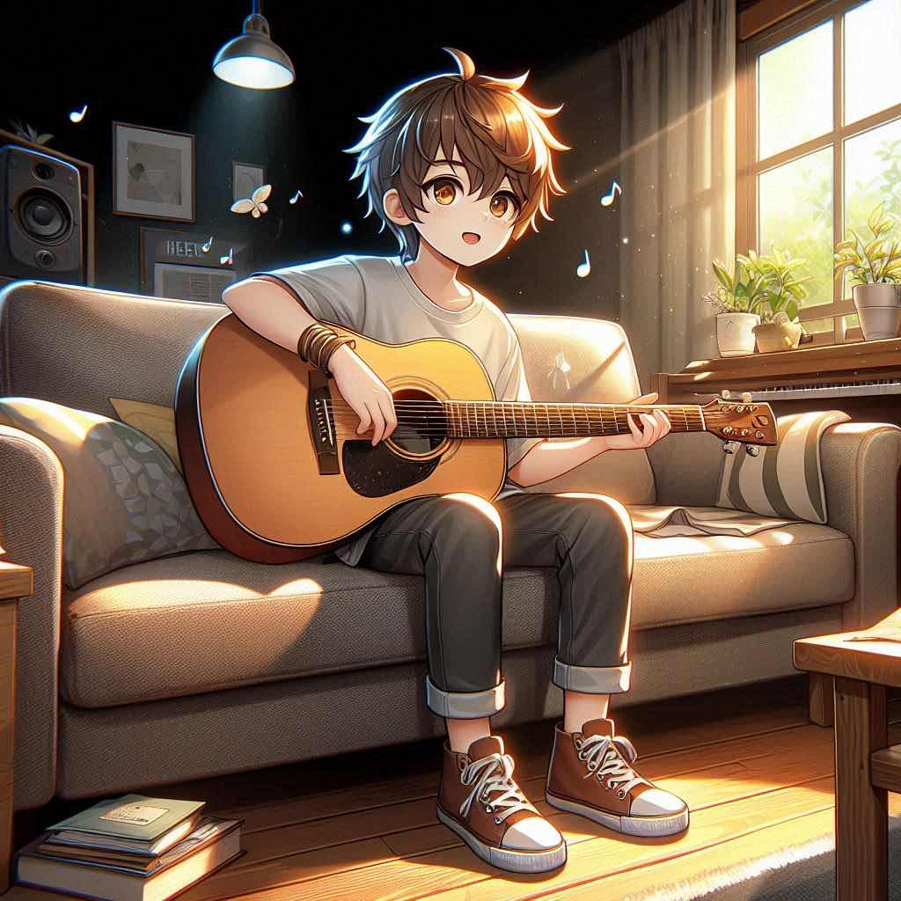

只把喜歡的東西，變成自己的興趣。
作者：xiaolan | 發表於 2025-07-26

🌟 興趣 是推動我們努力、持續學習的最大動力。
很多人在工作中迷失了方向，因為他們做的事情，不一定是自己喜歡的。 但 「只做喜歡的事」，其實是一種勇氣。
🎯 嘗試從 **日常的小喜好** 開始，比如喜歡畫畫的人，嘗試接觸網頁美術； 喜歡遊戲的人，可以學遊戲設計。
當你能夠把「喜歡的事」做到極致，就會成為 **你的專業與價值**。
個人資訊
作者：xiaolan | 發表於 2025-07-26
🌟 興趣 是推動我們努力、持續學習的最大動力。
很多人在工作中迷失了方向，因為他們做的事情，不一定是自己喜歡的。 但 「只做喜歡的事」，其實是一種勇氣。
🎯 嘗試從 **日常的小喜好** 開始，比如喜歡畫畫的人，嘗試接觸網頁美術； 喜歡遊戲的人，可以學遊戲設計。
當你能夠把「喜歡的事」做到極致，就會成為 **你的專業與價值**。